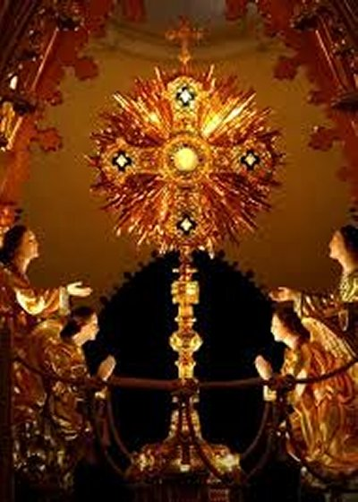
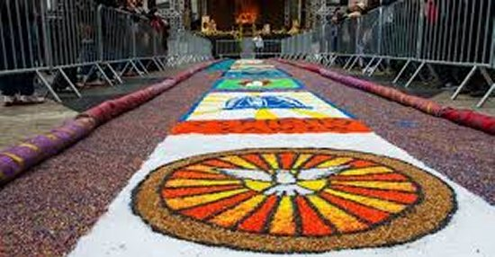

"CARIDADE DIVINA"
=FESTA DO CORPO DE DEUS=


"OSTENSÓRIO COM JESUS SACRAMENTADO ADORADO PELOS ANJOS".
"RUA ORNAMENTADA PARA A PASSAGEM DA PROCISSÃO DE CORPUS CHRISTI".
=ÍNDICE=
- PRELÚDIO
- CARINHO DIVINO
- APOSTÓLICA E PERFEITA COMUNHÃO
- CORPUS CHRISTI